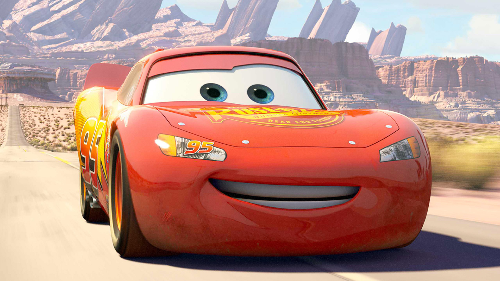
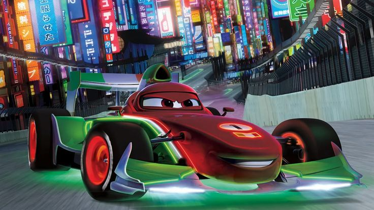

Cars
Personajes

El es un automóvil de carreras de color rojo que logró participar en la Copa Pistón cuando apenas era un novato.

|
|
|
|
|  | |
| El Rayo McQueen (Lightning McQueen) McQueen es uno de los personajes protagonistas El es un automóvil de carreras de color rojo que logró participar en la Copa Pistón cuando apenas era un novato. |
Mate, es uno de los automóviles principales en Cars y sus secuelas, Cars 2 y Cars 3. También hace aparición en Mater's Tall Tales y en otros medios de la franquicia. |
|
 |
| Sally Carrera . Ella es la dueña del motel "El Cono Comodín" y fiscal de Radiador Springs, de la que Rayo McQueen se enamora. Tras que McQueen destrozara accidentalmente la calle del pueblo y todos quisieran expulsarle, ella es la primera en pensar que se merece una oportunidad para la segunda chance. | Francesco Bernoulli es un personaje de la película Cars 2. Es el rival de Rayo McQueen y un Monoplaza Formula 1, pintado con los colores de la bandera de Italia (Rojo, verde y blanco) |